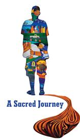

Powerful Film by Local Director
In 2005 Juan Quintero, a lifelong resident of Montecito/Lincoln heights and a Sacred Heart parishioner, was diagnosed with ALS, a disease that degenerates nerve cells in the brain and spinal cord leading to muscle paralysis. The disease affects 2 in 100,000 people worldwide according to research at John Hopkins University.
Approximately 20,000 to 30,000 people in the US are living with ALS. It is a complex disease and although the medical facts are important in understanding Juan’s affliction they distract from what is truly an inspirational local story. Fittingly, Juan’s brother, film director Ernesto Quintero, produced a film about his brother’s experience, an emotional ride on many levels.
A Sacred Journey is a story about a life marked by illness but also by extraordinary love of family and community, the local Sacred Heart community in particular. Intense and uplifting in equal parts, the film assembles in fine detail the stages of a life gradually limited by disease and the story is layered with a host of emotions, the strongest: hopelessness. There’s Juan’s initial heartbreak at learning of his condition in medical terms, and his family’s anguish in coming to terms with little hope of a cure or treatment options, and no promising medical breakthroughs. But, the story pushes beyond this sadness and explores breakthroughs of a different kind in the stirrings of warmth, strength, and joy that only hope and love can make possible amid such pain.
Juan’s struggle through illness has transformed, for the better, the people who care for him and know of him. He is amazingly alert and in good spirits despite not having mobility and being unable to speak. Much of his story takes place in Lincoln Heights where a mural in honor of Juan and his appreciation for the community, can now be seen on the grounds of the church’s elementary school.
Ernesto Quintero’s production is part of an ongoing project to promote awareness of the medical realities of ALS but, more important, it communicates Juan’s most significant roles in life thus far, those of a great, involved father, brother, son, and friend. Ernesto is energized by filmmaking and in particular ALS research and awareness. He is currently raising funds to finish his project and expand its viewership.
To learn more about the project and about ALS, please visit asacredjourneyfilm.com.